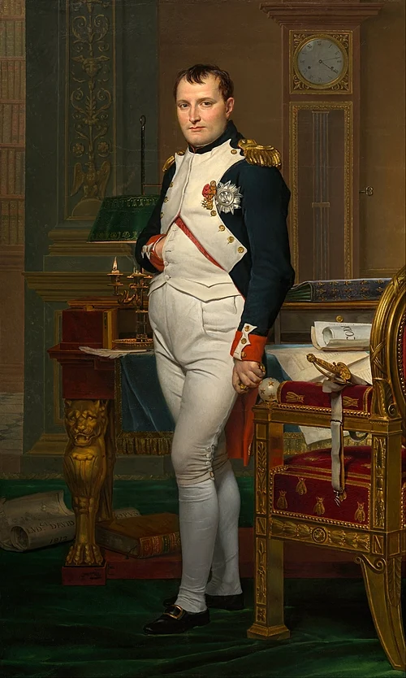

Paragraf pertama dan kedua
Napoleon Bonaparte[e] (lahir Napoleone di Buonaparte;[1][f] 15 Agustus 1769 – 5 Mei 1821), kemudian dikenal dengan nama kerajaannya Napoleon I, adalah seorang jenderal dan negarawan Prancis yang menjadi terkenal selama Revolusi Prancis dan memimpin serangkaian kampanye militer di seluruh Eropa selama Perang Revolusi Prancis dan Perang Napoleon dari tahun 1796 hingga 1815. Ia memimpin Republik Prancis sebagai Konsul Pertama dari tahun 1799 hingga 1804, kemudian memerintah Kekaisaran Prancis sebagai Kaisar Prancis dari tahun 1804 hingga 1814, dan sempat lagi pada tahun 1815. Dia adalah Raja Italia dari tahun 1805 hingga 1814 dan Pelindung Konfederasi Rhine dari tahun 1806 hingga 1813.
Lahir di pulau Corsica dari keluarga asal Italia, Napoleon pindah ke daratan Prancis pada tahun 1779 dan ditugaskan sebagai perwira di Angkatan Darat Kerajaan Prancis pada tahun 1785. Ia mendukung Revolusi Prancis pada tahun 1789 dan mempromosikan tujuannya di Corsica. Ia naik pangkat dengan cepat setelah memenangkan pengepungan Toulon pada tahun 1793 dan mengalahkan pemberontak royalis di Paris pada 13 Vendémiaire pada tahun 1795. Pada tahun 1796 ia memimpin kampanye militer melawan Austria dan sekutu Italia mereka dalam Perang Koalisi Pertama, meraih kemenangan-kemenangan penting dan menjadi pahlawan nasional. Ia memimpin invasi Mesir dan Suriah pada tahun 1798 yang menjadi batu loncatan menuju kekuasaan politik. Pada bulan November 1799, Napoleon merencanakan Kudeta 18 Brumaire melawan Direktori Prancis dan menjadi Konsul Pertama Republik. Ia memenangkan Pertempuran Marengo pada tahun 1800, yang memastikan kemenangan Prancis dalam Perang Koalisi Kedua, dan pada tahun 1803 ia menjual wilayah Louisiana ke Amerika Serikat. Pada bulan Desember 1804, Napoleon menobatkan dirinya sendiri sebagai Kaisar Prancis, yang selanjutnya memperluas kekuasaannya.
Paragraf ketiga
Gagalnya Perjanjian Amiens menyebabkan Perang Koalisi Ketiga pada tahun 1805. Napoleon menghancurkan koalisi tersebut dengan kemenangan telak di Pertempuran Austerlitz, yang menyebabkan pembubaran Kekaisaran Romawi Suci. Dalam Perang Koalisi Keempat, Napoleon mengalahkan Prusia di Pertempuran Jena–Auerstedt pada tahun 1806, mengawal Grande Armée nya ke Eropa Timur, dan mengalahkan Rusia pada tahun 1807 di Pertempuran Friedland. Berusaha untuk memperpanjang embargo perdagangan terhadap Inggris, Napoleon menyerbu Semenanjung Iberia dan mengangkat saudaranya Joseph sebagai Raja Spanyol pada tahun 1808, yang memicu Perang Semenanjung. Pada tahun 1809, Austria kembali menantang Prancis dalam Perang Koalisi Kelima, di mana Napoleon memperkuat cengkeramannya atas Eropa setelah memenangkan Pertempuran Wagram. Pada musim panas tahun 1812 ia melancarkan invasi ke Rusia, yang secara singkat menduduki Moskow sebelum melakukan penarikan mundur pasukannya yang dahsyat pada musim dingin itu. Pada tahun 1813 Prusia dan Austria bergabung dengan Rusia dalam Perang Koalisi Keenam, di mana Napoleon dikalahkan secara telak dalam Pertempuran Leipzig. Koalisi menyerang Prancis dan merebut Paris, memaksa Napoleon turun takhta pada bulan April 1814. Mereka mengasingkannya ke pulau Mediterania Elba dan mengembalikan kekuasaan Bourbon. Sepuluh bulan kemudian, Napoleon melarikan diri dari Elba dengan sebuah kapal brig, mendarat di Prancis dengan seribu orang, dan berbaris menuju Paris, sekali lagi mengambil alih kendali negara tersebut. Lawan-lawannya menanggapi dengan membentuk Koalisi Ketujuh, yang mengalahkannya di Pertempuran Waterloo pada bulan Juni 1815. Napoleon diasingkan ke pulau terpencil Saint Helena di Atlantik Selatan, di mana ia meninggal karena kanker perut pada tahun 1821, pada usia 51 tahun.
Paragraf keempat
Napoleon dianggap sebagai salah satu komandan militer terhebat dalam sejarah, dan taktik Napoleon masih dipelajari di sekolah-sekolah militer di seluruh dunia. Warisannya bertahan melalui reformasi hukum dan administrasi modern yang diberlakukannya di Prancis dan Eropa Barat, tertuang dalam Kode Napoleon. Ia mendirikan sistem pendidikan publik,[2] menghapuskan sisa-sisa feodalisme,[3] membebaskan kaum Yahudi dan minoritas agama lainnya,[4] menghapuskan Inkuisisi Spanyol,[5] memberlakukan prinsip kesetaraan di depan hukum bagi kelas menengah yang sedang berkembang,[6] dan memusatkan kekuasaan negara dengan mengorbankan otoritas agama.[7] Penaklukannya bertindak sebagai katalisator perubahan politik dan pengembangan negara bangsa. Namun, ia kontroversial karena perannya dalam perang yang menghancurkan Eropa, penjarahan wilayah taklukannya, dan catatannya yang beragam tentang hak-hak sipil. Ia menghapuskan kebebasan pers, mengakhiri pemerintahan perwakilan yang dipilih secara langsung, mengasingkan dan memenjarakan para pengkritik rezimnya, dan mengembalikan perbudakan di koloni-koloni Prancis, melarang masuknya orang kulit hitam dan mulatto ke Prancis, mengurangi hak-hak sipil perempuan dan anak-anak di Prancis, memperkenalkan kembali monarki dan bangsawan turun-temurun,[8][9][10] dan secara keras menekan pemberontakan rakyat terhadap pemerintahannya.